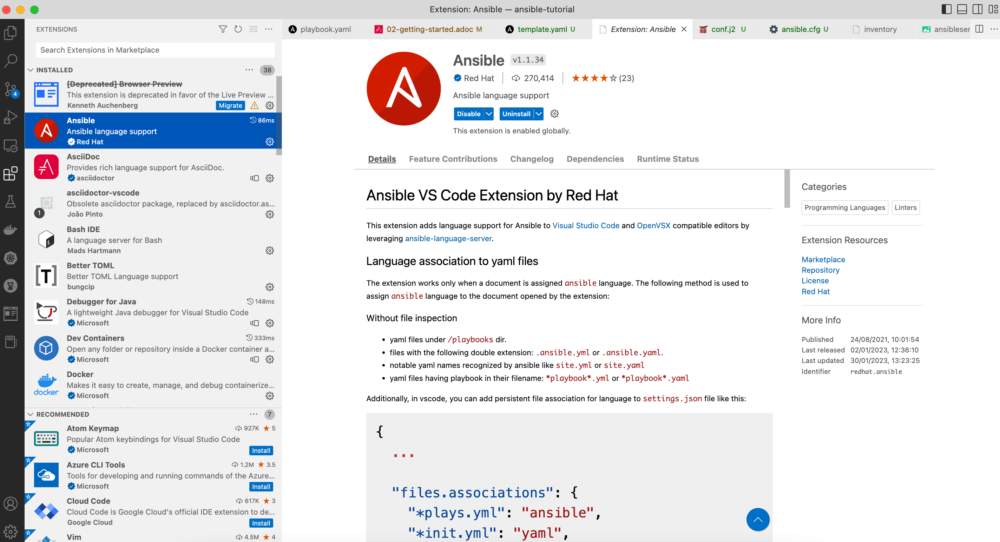

Getting Started
In this section, you’ll learn the following:
-
Create an Ansible inventory file
-
Run Ansible with basic modules
-
Executing commands in the remote host
-
Installing packages to the remote host
-
Create a Playbook file
-
Copying files from the local host to the remote host
-
Installing a Quarkus application (with its dependencies) into the remote host
With machines up and running and Ansible installed, we can start managing the infrastructure.
Go to the directory where you cloned the Ansible tutorial repository, and create a new directory to store the Ansible code:
mkdir app1
cd app1IDE
You can use any editor to create Ansible files, but we’d recommend you use Visual Studio Code with the Ansible language support extension:

Inventory
The first thing is creating an inventory file.
Ansible automates tasks on managed nodes or "hosts" in your infrastructure using a list or group of lists of hosts.
This is known as an inventory file.
Although this inventory file is now static, Ansible also supports getting hosts from dynamic resources like Cobbler or OpenStack.
The inventory file can be created in YAML or INI format. In this example INI format is used as it’s easy to understand and less error-prone to white spaces.
So, let’s create the inventory file for managing two servers grouped in two categories (staging and production):
Create a new file named inventory with the following content:
[staging]
staging ansible_user=root ansible_host=127.0.0.1 ansible_port=2223 ansible_ssh_private_key_file=~/.ssh/id_rsa_ansible
[production]
production ansible_user=root ansible_host=127.0.0.1 ansible_port=2224 ansible_ssh_private_key_file=~/.ssh/id_rsa_ansibleIn this inventory file, we set two groups of servers, one for the staging and another for the production environments.
For each entry, we set the user to login, the hostname/IP, the SSH port, and the private key to use.
Run the following command to list the inventory:
ansible-inventory -i inventory --list[WARNING]: Found both group and host with same name: production
[WARNING]: Found both group and host with same name: staging
{
"_meta": {
"hostvars": {
"production": {
"ansible_host": "127.0.0.1",
"ansible_port": 2224,
"ansible_ssh_private_key_file": "~/.ssh/id_rsa_ansible",
"ansible_user": "root"
},
"staging": {
"ansible_host": "127.0.0.1",
"ansible_port": 2223,
"ansible_ssh_private_key_file": "~/.ssh/id_rsa_ansible",
"ansible_user": "root"
}
}
},
"all": {
"children": [
"production",
"staging",
"ungrouped"
]
},
"production": {
"hosts": [
"production"
]
},
"staging": {
"hosts": [
"staging"
]
}
}Running Ansible
One of the essential parts of Ansible is Modules, which are portions of code executed from Ansible, usually on the remote target node (using the SSH connection), and collects return values.
An example of a module is the ping module. This module contains the code to execute a ping against servers.
In the same way, there is a module to copy files from a local directory to the remote server.
Of course, you could implement them by running commands/shell scripts, but Ansible provides these modules.
Ping module
Let’s use Ansible to ping all servers defined in the inventory.
Run the following command in the same directory where you created the inventory file to ping staging servers.
ansible staging -i inventory -m ping (1) (2) (3)| 1 | First argument is the group of servers to execute the command |
| 2 | With -i you set the inventory file location |
| 3 | With -m enables the ping module |
[WARNING]: Found both group and host with same name: staging
[WARNING]: Found both group and host with same name: production
staging | SUCCESS => {
"ansible_facts": {
"discovered_interpreter_python": "/usr/bin/python3"
},
"changed": false,
"ping": "pong"
}Same can be done with production servers:
ansible production -i inventory -m ping[WARNING]: Found both group and host with same name: production
[WARNING]: Found both group and host with same name: staging
production | SUCCESS => {
"ansible_facts": {
"discovered_interpreter_python": "/usr/bin/python3"
},
"changed": false,
"ping": "pong"
}You can also use the IP/hostname of the server or the particular keyword all directly to execute it to all servers defined in the inventory file.
ansible all -i inventory -m ping[WARNING]: Found both group and host with same name: production
[WARNING]: Found both group and host with same name: staging
staging | SUCCESS => {
"ansible_facts": {
"discovered_interpreter_python": "/usr/bin/python3"
},
"changed": false,
"ping": "pong"
}
production | SUCCESS => {
"ansible_facts": {
"discovered_interpreter_python": "/usr/bin/python3"
},
"changed": false,
"ping": "pong"
}Command module
Sometimes we only want to execute a command against servers, so we do not rely on any module but send the command directly through an SSH connection.
For these cases, there is the command module.
Let’s run the uptime command inside all servers defined in the inventory.
ansible all -i inventory -a "uptime" (1)| 1 | With -a option you run directly the command to servers |
[WARNING]: Found both group and host with same name: production
[WARNING]: Found both group and host with same name: staging
production | FAILED | rc=2 >>
[Errno 2] No such file or directory: b'uptime'
staging | FAILED | rc=2 >>
[Errno 2] No such file or directory: b'uptime'The uptime command is not present in the servers, so Ansible gets back the error message.
Let’s install the uptime program on all servers to fix this problem.
Since servers are a Fedora distribution, we use the dnf module to install the package.
INFO: uptime program is inside the procps-ng package.
Run the following command to run dnf to all servers with the name argument set to procps-ng:
ansible all -i inventory -m dnf -a "name=procps-ng"[WARNING]: Found both group and host with same name: production
[WARNING]: Found both group and host with same name: staging
production | CHANGED => {
"ansible_facts": {
"discovered_interpreter_python": "/usr/bin/python3"
},
"changed": true,
"msg": "",
"rc": 0,
"results": [
"Installed: procps-ng-3.3.17-6.fc37.2.x86_64"
]
}
staging | CHANGED => {
"ansible_facts": {
"discovered_interpreter_python": "/usr/bin/python3"
},
"changed": true,
"msg": "",
"rc": 0,
"results": [
"Installed: procps-ng-3.3.17-6.fc37.2.x86_64"
]
}Run again the uptime command to verify it’s installed.
ansible all -i inventory -a "uptime"[WARNING]: Found both group and host with same name: production
[WARNING]: Found both group and host with same name: staging
production | CHANGED | rc=0 >>
13:44:23 up 2:39, 0 users, load average: 0.12, 0.09, 0.04
staging | CHANGED | rc=0 >>
13:44:23 up 2:39, 0 users, load average: 0.12, 0.09, 0.04Privilege Escalation
For simplicity, we are login into the machines as the root user.
This lets you access protected resources.
To validate the dnf log, we can run the following:
ansible staging -i inventory -a "cat /var/log/dnf.log"[WARNING]: Found both group and host with same name: staging
[WARNING]: Found both group and host with same name: production
staging | CHANGED | rc=0 >>
2023-01-16T17:32:49+0000 INFO --- logging initialized ---
2023-01-16T17:32:49+0000 DDEBUG timer: config: 7 ms
2023-01-16T17:32:49+0000 DEBUG YUM version: 4.14.0
2023-01-16T17:32:49+0000 DDEBUG Command: yum -y update
2023-01-16T17:32:49+0000 DDEBUG Installroot: /
2023-01-16T17:32:49+0000 DDEBUG Releasever: 37This case works because we’re already root, but logging with a non-root user might need some privilege escalation to execute the command.
Ansible offers several arguments for that escalation, but the most used are --become and -K.
The --become argument is used to run the operations with a privilege escalation. By default, it’s sudo, but it could be su, pbrun, …
The -K argument is used to ask for a privilege escalation password.
So in case of not being a root user, the previous command should be:
ansible staging --become -K -i inventory -a "cat /var/log/dnf.log"Playbooks
So far, we’ve seen running commands against a list of servers using Ansible, and this might be good when the command is simple. But what happens when we need to run a list of operations against the servers, for example, installing the Java Virtual Machine, copying our application files into the servers, and starting it?
One option could be manually running the ansible command several times in the terminal.
But Ansible offers a way to define all these instructions/steps/tasks in a single file and apply them to all inventory elements.
This file in Ansible is named a playbook.
A playbook is a YAML file where we configure all these execution steps.
Let’s see a complete example of preparing, installing, and running a Java application into each of the servers defined in the inventory.
Prepare Environments
The first part of our playbook is composed of installing the Java Virtual Machine and creating the directory where the application will be copied.
To do that, dnf and file modules are used.
Create a new file named playbook.yaml in the same directory as the inventory with the following content:
---
- hosts: all (1)
become: true (2)
tasks:
- name: Install Packages
dnf: name={{ item }} (3)
loop: [ 'java-17-openjdk-devel'] (4)
tags: [ 'setup' ]
- name: Create a directory if it does not exist
file: (5)
path: /var/hello (6)
state: directory
mode: '0755'
tags: ['setup']| 1 | Apply all tasks to all machines defined in the inventory file |
| 2 | Execute commands with sudo |
| 3 | Run dnf against the value of the variable item |
| 4 | Loops through the array of elements, setting them in the item var and executing dnf |
| 5 | Use the file module to create a directory |
| 6 | Creates /var/hello directory in all machines |
To apply a Playbook, run the following command:
ansible-playbook -i inventory playbook.yaml[WARNING]: Found both group and host with same name: staging
[WARNING]: Found both group and host with same name: production
PLAY [all] *********************************************************************
TASK [Gathering Facts] *********************************************************
ok: [production]
ok: [staging]
TASK [Install Packages] ********************************************************
changed: [production] => (item=java-17-openjdk-devel)
changed: [staging] => (item=java-17-openjdk-devel)
TASK [Create a directory if it does not exist] *********************************
changed: [production]
changed: [staging]
PLAY RECAP *********************************************************************
production : ok=3 changed=2 unreachable=0 failed=0 skipped=0 rescued=0 ignored=0
staging : ok=3 changed=2 unreachable=0 failed=0 skipped=0 rescued=0 ignored=0Installing the Application
The following phase is copying the application to the /var/hello directory and configuring Supervisord to control the application process.
Before modifying the Playbook content, download Application and Supervisord Configuration and copy them in the same directory as playbook.
Append to the previous Playbook file, the following tasks:
- name: Copy file with owner and permissions
copy: (1)
src: hello-world-1.0.0-SNAPSHOT-runner.jar
dest: /var/hello/hello-world-1.0.0-SNAPSHOT-runner.jar
owner: root
group: root
mode: '0755'
tags: ['app']
- name: Copy supervisor conf file for the app
copy: (2)
src: hello.conf
dest: /etc/supervisord.d/hello.conf
owner: root
group: root
mode: '0644'
tags: ['app']
- name: Reread supervisord
command: /usr/bin/supervisorctl reread (3)
tags: ['app']
- name: Update supervisord
command: /usr/bin/supervisorctl update
tags: ['app'] (4)| 1 | Copy module copies file from local directory to the remote machine |
| 2 | Add supervisord configuration file |
| 3 | Restart the supervisord daemon to load the configuration and start the application |
| 4 | Tags section is used to categorize tasks |
The full playbook file should look like:
---
- hosts: all
become: true
tasks:
- name: Install Packages
dnf: name={{ item }}
loop: [ 'java-17-openjdk-devel']
tags: [ 'setup' ]
- name: Create a directory if it does not exist
file:
path: /var/hello
state: directory
mode: '0755'
tags: ['setup']
- name: Copy file with owner and permissions
copy:
src: hello-world-1.0.0-SNAPSHOT-runner.jar
dest: /var/hello/hello-world-1.0.0-SNAPSHOT-runner.jar
owner: root
group: root
mode: '0755'
tags: ['app']
- name: Copy supervisor conf file for the app
copy:
src: hello.conf
dest: /etc/supervisord.d/hello.conf
owner: root
group: root
mode: '0644'
tags: ['app']
- name: Reread supervisord
command: /usr/bin/supervisorctl reread
tags: ['app']
- name: Update supervisord
command: /usr/bin/supervisorctl update
tags: ['app']To apply a playbook, run the following command:
ansible-playbook -i inventory playbook.yaml[WARNING]: Found both group and host with same name: production
[WARNING]: Found both group and host with same name: staging
PLAY [all] *********************************************************************
TASK [Gathering Facts] *********************************************************
ok: [staging]
ok: [production]
TASK [Install Packages] ********************************************************
ok: [staging] => (item=java-17-openjdk-devel)
ok: [production] => (item=java-17-openjdk-devel)
TASK [Create a directory if it does not exist] *********************************
ok: [staging]
ok: [production]
TASK [Copy file with owner and permissions] ************************************
changed: [staging]
changed: [production]
TASK [Copy supervisor conf file for the app] ***********************************
changed: [staging]
changed: [production]
TASK [Reread supervisord] ******************************************************
changed: [production]
changed: [staging]
TASK [Update supervisord] ******************************************************
changed: [staging]
changed: [production]
PLAY RECAP *********************************************************************
production : ok=7 changed=4 unreachable=0 failed=0 skipped=0 rescued=0 ignored=0
staging : ok=7 changed=4 unreachable=0 failed=0 skipped=0 rescued=0 ignored=0At this point, the steps executed in the previous section are not executed anymore, and the application is installed and running.
Let’s query both applications (staging and production) to validate that application is working correctly:
curl localhost:8080/hello (1)
curl localhost:8081/hello (2)| 1 | Staging |
| 2 | Production |
Hello from RESTEasy Reactive
Hello from RESTEasy ReactiveInspect the logs in the docker-machine terminal to validate that the process has been spawned by supervisord.
preprod_1 | 2023-01-27 15:26:04,952 INFO spawned: 'hello' with pid 1464
prod_1 | 2023-01-27 15:26:04,969 INFO spawned: 'hello' with pid 1463
preprod_1 | 2023-01-27 15:26:05,955 INFO success: hello entered RUNNING state, process has stayed up for > than 1 seconds (startsecs)
prod_1 | 2023-01-27 15:26:05,972 INFO success: hello entered RUNNING state, process has stayed up for > than 1 seconds (startsecs)
prod_1 | 2023-01-27 15:27:05,360 INFO reaped unknown pid 761 (exit status 255)
preprod_1 | 2023-01-27 15:27:05,469 INFO reaped unknown pid 762 (exit status 255)Automatic Validation
We validated the correctness of the deployment manually, but Ansible also supports this use case.
- name: Check status 200 and fail if incorrect page contents
uri: (1)
url: http://localhost:8080/hello
return_content: yes
register: response (2)
tags: ['test']
- name: Print result
debug:
var: response.content (3)
tags: ['test']| 1 | Use the uri module to query service |
| 2 | Record return content into response variable |
| 3 | Use the debug module to print the content of response variable (output) |
The full playbook file should look like:
---
- hosts: all
become: true
tasks:
- name: Install Packages
dnf: name={{ item }}
loop: [ 'java-17-openjdk-devel']
tags: [ 'setup' ]
- name: Create a directory if it does not exist
file:
path: /var/hello
state: directory
mode: '0755'
tags: ['setup']
- name: Copy file with owner and permissions
copy:
src: hello-world-1.0.0-SNAPSHOT-runner.jar
dest: /var/hello/hello-world-1.0.0-SNAPSHOT-runner.jar
owner: root
group: root
mode: '0755'
tags: ['app']
- name: Copy supervisor conf file for the app
copy:
src: hello.conf
dest: /etc/supervisord.d/hello.conf
owner: root
group: root
mode: '0644'
tags: ['app']
- name: Reread supervisord
command: /usr/bin/supervisorctl reread
tags: ['app']
- name: Update supervisord
command: /usr/bin/supervisorctl update
tags: ['app']
- name: Check status 200 and fail if incorrect page contents
uri:
url: http://localhost:8080/hello
return_content: yes
register: response
tags: ['test']
- name: Print result
debug:
var: response.content
tags: ['test']You can run all the Ansible Playbook or restrict to only run the test tasks:
ansible-playbook -i inventory playbook.yaml --tags=test[WARNING]: Found both group and host with same name: staging
[WARNING]: Found both group and host with same name: production
PLAY [all] *********************************************************************
TASK [Gathering Facts] *********************************************************
ok: [production]
ok: [staging]
TASK [Check status 200 and fail if incorrect page contents] ********************
ok: [production]
ok: [staging]
TASK [Print result] ************************************************************
ok: [staging] => {
"response.content": "Hello from RESTEasy Reactive"
}
ok: [production] => {
"response.content": "Hello from RESTEasy Reactive"
}
PLAY RECAP *********************************************************************
production : ok=3 changed=0 unreachable=0 failed=0 skipped=0 rescued=0 ignored=0
staging : ok=3 changed=0 unreachable=0 failed=0 skipped=0 rescued=0 ignored=0